Libro FOA · Capítulo 07
Sistemas y componentes de transmisión
Transceptores, emisores, receptores, WDM y presupuesto de potencia de los enlaces.
En este capítulo
Qué aprenderás
- Cómo funcionan los enlaces de datos y los sistemas de transmisión de fibra óptica
- Qué componentes se utilizan en los transceptores
- Tipos de fuentes y detectores utilizados en los transceptores
- Parámetros de rendimiento de los sistemas de transmisión por fibra óptica
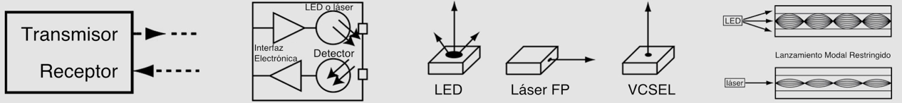
Enlaces de Datos de Fibra Óptica
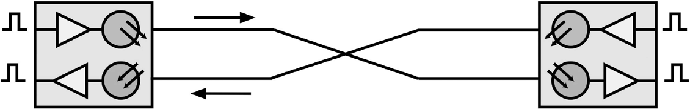
Los sistemas de transmisión por fibra óptica utilizan enlaces de datos que funcionan de forma similar al diagrama mostrado arriba. Cada enlace de fibra consta de un transmisor en un extremo de la fibra y un receptor en el otro. La mayoría de los sistemas funcionan transmitiendo en una dirección en una fibra y en la dirección inversa en otra fibra para un funcionamiento dúplex completo.
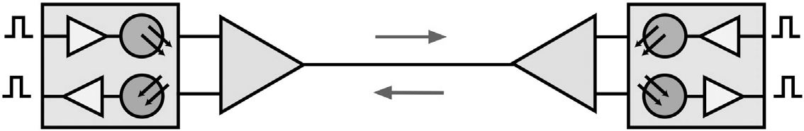
Es posible transmitir en ambas direcciones por una sola fibra, pero para ello se necesitan acopladores y la fibra es menos cara que los acopladores. Una red óptica pasiva (PON) FTTH es uno de los únicos sistemas que utilizan la transmisión bidireccional a través de una sola fibra porque su arquitectura de red ya se basa en acopladores.
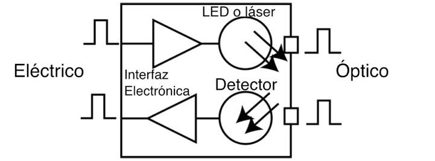
Transceptores
La mayoría de los sistemas utilizan un "transceptor" que incluye transmisor y receptor en un solo módulo. El transmisor toma una entrada eléctrica y la convierte en a una salida óptica de un diodo láser o LED. La luz del transmisor se acopla a la fibra con un conector y se transmite a través de la planta de cables de fibra óptica. La luz del extremo de la fibra se acopla a un receptor donde un detector convierte la luz en una señal eléctrica que se acondiciona adecuadamente para su uso por el equipo receptor.
Analógico o Digital
Las señales analógicas son señales continuamente variables en las que la información de la señal está contenida en la amplitud de la señal a lo largo del tiempo. Las señales digitales se muestrean a intervalos de tiempo regulares y la amplitud se convierte en bytes digitales, de modo que la información es un número digital. Las mayoría de los datos suelen ser naturalmente señales analógicas, mas estas están sujetas a degradación por el ruido en el sistema de transmisión. Cuando una señal analógica se atenúa en un cable, la relación señal/ruido empeora, por lo que la calidad de la señal se degrada. Las señales digitales pueden transmitirse a largas distancias sin degradarse, ya que la señal es menos sensible al ruido.
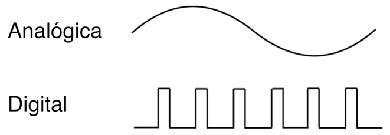
Los enlaces de datos por fibra óptica pueden ser analógicos o digitales, aunque la mayoría son digitales. Las redes telefónicas e informáticas son digitales, la televisión por cable es analógica pero se está convirtiendo a digital, y los circuitos cerrados de televisión pueden ser de ambos tipos.
Tanto los enlaces analógicos como los digitales tienen algunos parámetros críticos comunes y algunas diferencias importantes. Para ambos, lo más importante es el margen de pérdida óptica o el balance de potencia. Los enlaces de datos analógicos se prueban en función de la relación señal/ruido para determinar el margen del enlace, mientras que los enlaces digitales utilizan la tasa de error de bit como medida de rendimiento. Ambos enlaces requieren pruebas en todo el ancho de banda especificado para su funcionamiento, pero la mayoría de los enlaces de datos se especifican ahora para un tipo de red específico o aplicación como AM CATV o monitores en color RGB para enlaces analógicos y SONET, Ethernet o canal de fibra para enlaces digitales.
Carcasas de Hardware Electrónico
Los transceptores suelen estar empaquetados en carcasas estándar del sector para poder alojar varias fuentes en los equipos de transmisión. Los módulos se conectan a un conector dúplex en el extremo óptico y a una interfaz eléctrica estándar en el otro extremo. Los transceptores se alimentan del equipo en el que están integrados.
Fuentes Para Transmisores de Fibra Óptica
Las fuentes utilizadas para los transmisores de fibra óptica tienen que cumplir varios criterios: estar en la longitud de onda correcta, poder modularse con la rapidez suficiente para transmitir datos y acoplarse eficazmente a la fibra.
Se suelen utilizar cuatro tipos de fuentes: LED, láseres de Fabry-Pérot (FP), láseres de realimentación distribuida (DFB) y láseres de emisión superficial de cavidad vertical (VCSEL). Todos ellos convierten señales eléctricas en ópticas, pero por lo demás son dispositivos muy diferentes. Los tres son dispositivos semiconductores diminutos (chips). Los LED y los VCSEL se fabrican en obleas semiconductoras de modo que emiten luz desde la superficie del chip, mientras que los láseres F-P y DFB emiten desde el lateral del chip a partir de una cavidad láser creada en el centro del mismo.
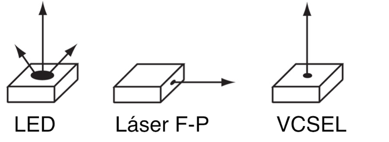
Los LED tienen potencias mucho menores que los láseres y su patrón de salida de luz más grande y divergente hace que sean más difíciles de acoplar a las fibras, lo que limita su uso a las fibras multimodo. Los láseres tienen salidas de luz más pequeñas y ajustadas y se acoplan fácilmente a fibras monomodo, lo que los hace ideales para enlaces de alta velocidad a larga distancia. Los LED tienen un ancho de banda mucho menor que los láseres y están limitados a sistemas que funcionan hasta unos 250 MHz o unos 200 Mb/s. Los láseres tienen una capacidad de ancho de banda muy elevada, la mayoría útil hasta bastante más de 10 GHz o 10 Gb/s.
Debido a su método de fabricación, los LED y los VCSEL son baratos. Los láseres son más caros porque crear la cavidad láser dentro del dispositivo es más difícil, hay que separar el chip de la oblea semiconductora y recubrir cada extremo antes de poder probar el láser para ver si es bueno.
Especificaciones Típicas De La Fuente De Fibra Óptica
| Tipo de Dispositivo | Largos de Onda (nm) | Potencia de Entrada (dBm) | Ancho de Banda | Tipos de Fibra |
|---|---|---|---|---|
| LED | 850, 1300 | -30 to -10 | <250 MHz | MM |
| Laser Fabry-Perot | 850,1310 (1280- 1330), 1550 (1480- 1650) | 0 to +10 | >10 GHz | MM, SM |
| Laser DFB | 1550 (1480-1650) | 0 to + 13 (+25 con amplificador) | >10 GHz | SM |
| VCSEL | 850 | -10 to 0 | >10 GHz | MM |
Los LED tienen un ancho de banda limitado, mientras que todos los tipos de láser son muy rápidos. Otra gran diferencia entre los LED y ambos tipos de láser es la salida espectral. Los LED tienen una salida espectral muy amplia, por lo que sufren dispersión cromática en la fibra, mientras que los láseres tienen una salida espectral estrecha que sufre muy poca dispersión cromática. Los láseres DFB, que se utilizan en sistemas de larga distancia y DWDM, tienen la anchura espectral más estrecha, lo que minimiza la dispersión cromática en los enlaces más largos. Los láseres DFB también son muy lineales (es decir, la salida de luz sigue directamente a la entrada eléctrica), por lo que pueden utilizarse como fuentes en sistemas de CATV AM.
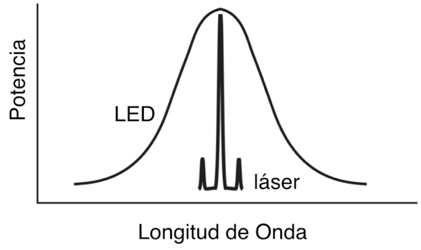
La elección de estos dispositivos viene determinada principalmente por cuestiones de velocidad y compatibilidad de la fibra. Como muchos
sistemas de predios que utilizan fibra multimodo han superado velocidades binarias de 1 Gb/s, los láseres (sobre todo VCSEL) han sustituido a los LED. La salida del LED es muy amplia, pero los láseres están muy focalizados, y las fuentes tendrán un relleno modal muy diferente en las fibras. El lanzamiento restringido del VCSEL o de cualquier láser hace que el ancho de banda efectivo de la fibra sea mayor, pero la fibra optimizada para láser, normalmente OM3, es la la recomendada para láseres.
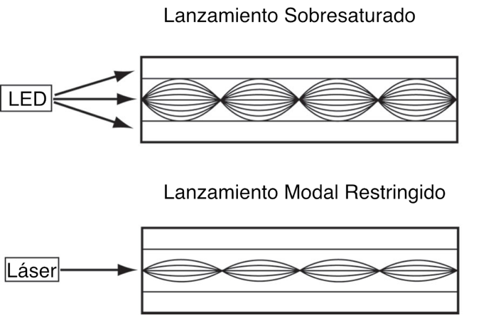
La electrónica de un transmisor es sencilla. Convierten un pulso entrante (voltaje) en un pulso de corriente preciso para accionar la fuente. Por lo general, los láseres se polarizan con una corriente continua baja y se modulan por encima de esa corriente de polarización para maximizar la velocidad.
Detectores Para Receptores de Fibra Óptica
Los receptores utilizan detectores semiconductores (fotodiodos o fotodetectores) para convertir las señales ópticas en señales eléctricas. Los fotodiodos de silicio se utilizan para enlaces de longitud de onda corta (650 para POF y 850 para fibra de vidrio MM). Los sistemas de longitud de onda largas suelen utilizar detectores de InGaAs (arseniuro de indio y galio), ya que tienen menos ruido que el germanio, lo que permite disponer de receptores más sensibles.
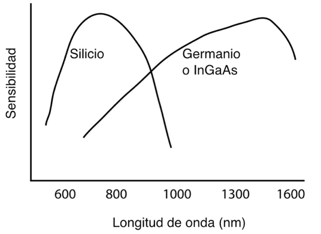
Los sistemas de muy alta velocidad utilizan a veces fotodiodos de avalancha (APD por siglas en inglés [avalanche photo diode]) que tienen mayor capacidad de ancho de banda que otros fotodiodos. Los APD se polarizan a alto voltaje para crear ganancia en el fotodiodo, aumentando la sensibilidad y la capacidad de frecuencia. Estos dispositivos son más caros y más complicados de utilizar, pero ofrecen mejoras significativas en el rendimiento.
Componentes Especiales de Transmisión de Fibra Óptica
Multiplexación por División de Longitud de Onda
Dado que la luz de diferentes longitudes de onda no se mezcla dentro de la fibra, es posible transmitir señales a varias longitudes de onda diferentes en una sola fibra simultáneamente. Aunque la fibra es barata, la instalación de nuevos cables puede resultar cara, por lo que utilizar las fibras instaladas para transportar señales adicionales puede resultar muy rentable.
La multiplexación por división de longitud de onda (WDM) se utilizó por primera vez con fibra multimodo en los primeros días de la fibra óptica, utilizando tanto 850 como 1310 nm en fibra multimodo, a veces transportando dos señales en la misma dirección y a veces permitiendo la transmisión bidireccional en una fibra. Cuando se utiliza la transmisión bidireccional por una sola fibra, las dos longitudes de onda diferentes evitan la diafonía. Cuando se utilizan en la misma dirección, los filtros eliminan una longitud de onda para evitar la diafonía. Ambas técnicas se utilizan en FTTH.
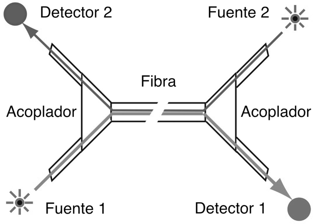
WDM bidireccional en una fibra
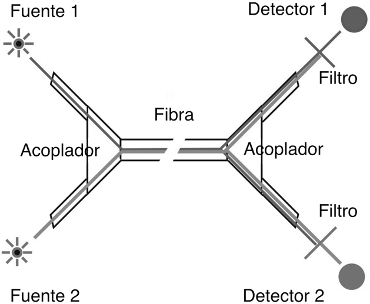
WDM con dos longitudes de onda en una fibra en la misma dirección.
Las redes de transmisión monomodo pueden transportar señales a 10 Gb/s en 128 o más longitudes de onda, lo que se denomina multiplexación por división de longitud de onda densa (DWDM). La multiplexación por división de longitud de onda gruesa (CWDM) utiliza nuevas fibras de bajo pico de agua para transmitir señales en láseres en el rango de 1260 a 1670 nm. Ambos sistemas funcionan acoplando muchas longitudes de onda en una fibra mediante un acoplador óptico y separándolas después en el extremo receptor con un acoplador WDM que dirige cada longitud de onda a una fibra distinta. Los sistemas multimodo que utilizan WDM han sido menos populares, pero algunos estándares utilizan WDM gruesa para transportar múltiples señales a más de 1 Gb/s a través de fibras multimodo optimizadas para láser con el fin de crear enlaces de mayor velocidad binaria.
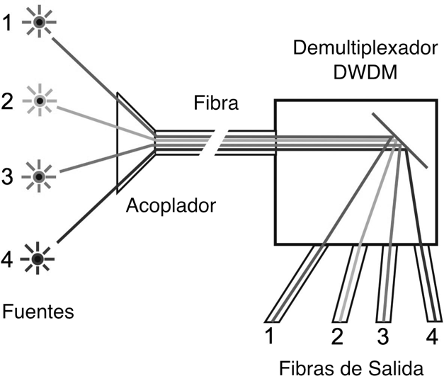
Los sistemas de DWDM pueden transmitir y separar muchas longitudes de onda muy próximas entre sí.
Repetidores y Amplificadores de Fibra
Aunque la baja pérdida de la fibra óptica permite que las señales viajen cientos de kilómetros, las líneas de muy largo recorrido y los cables submarinos requieren regeneradores o repetidores para amplificar la señal periódicamente. Al principio, los repetidores consistían básicamente en un receptor seguido de un transmisor. La señal entrante se convertía de una señal luminosa a una señal eléctrica por un receptor, se limpiaba para eliminar todo el ruido posible y luego se retransmitía por otro transmisor láser. Estos repetidores añadían ruido a la señal, consumían mucha energía y eran complicados, lo que significa que eran una fuente de fallos. Además, tenían que fabricarse para la tasa de bits específica de transmisión y la actualización requería sustituir todos los repetidores, ¡una tarea realmente difícil en un cable submarino!
La solución a los repetidores de fibra óptica fue el amplificador de fibra. El amplificador de fibra típico funciona en la banda de 1480-1650 nm. Consiste en una longitud de fibra dopada con Erbio bombeada con un láser a 980 o 1480 nm. El láser de bombeo suministra la energía para el amplificador, mientras que la señal entrante estimula la emisión a medida que el pulso atraviesa la fibra dopada. La señal estimulada proporciona la ganancia del amplificador, por lo que se produce un crecimiento rápido y exponencial de la potencia óptica en la fibra dopada. Son posibles ganancias de >40 dB (10,000X) con potencias de salida >+26 dBm (400 mW).
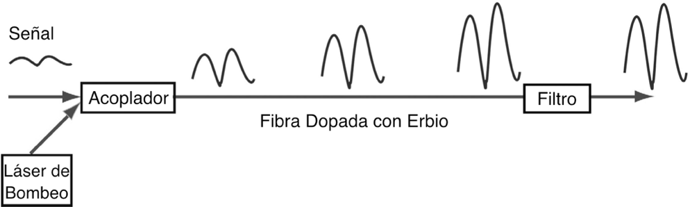
Además de utilizarse como repetidores, los amplificadores de fibra se emplean para aumentar el nivel de señal de los sistemas de CATV, que requieren altos niveles de potencia en el receptor para mantener un rendimiento adecuado de la relación señal/ruido, lo que permite tendidos de cable más largos o el uso de divisores para "difundir" una única señal a través de un acoplador a muchas fibras, ahorrando el coste de transmisores adicionales. En telefonía, los amplificadores de fibra se combinan con DWDM (multiplexores por división de longitud de onda densa) para superar las ineficiencias de los acopladores DWDM en transmisiones de larga distancia.
Bandas de Transmisión de Longitud de Onda en Redes de Fibra Óptica
A medida que se han desarrollado las redes de fibra óptica para distancias más largas, velocidades más altas y multiplexación por división de longitud de onda (WDM), las fibras se han utilizado en nuevas gamas de longitudes de onda, ahora llamadas "bandas", en las que la fibra y los equipos de transmisión pueden funcionar con mayor eficacia.
La transmisión por fibra monomodo comenzó en la "banda O", justo por encima de la longitud de onda de corte de la fibra SM, desarrollada para aprovechar la menor pérdida de la fibra de vidrio en longitudes de onda más largas y la disponibilidad de láseres con diodos de 1310 nm. (Originalmente, las fibras SM se desarrollaron para láseres de 850 nm en los que el núcleo de la fibra era aproximadamente la mitad que el de la fibra SM convencional actual (5 micrones frente a 8-9 micrones a 1310 nm).
Para aprovechar la menor pérdida a 1550 nm, se desarrolló la fibra para la banda C. A medida que los enlaces se hicieron más largos y se empezaron a utilizar amplificadores de fibra en lugar de repetidores ópticos-electrónicos-ópticos, la banda C adquirió mayor importancia. Con la llegada de la DWDM (multiplexación por división de longitud de onda densa), que permitía que varias señales compartieran una misma fibra, se amplió el uso de esta banda. El desarrollo de nuevos amplificadores de fibra (Raman y dopados con tulio) promete ampliar la DWDM a la banda L.
Existen varias versiones de bajo coste de WDM, generalmente denominadas WDM gruesa o CWDM, que utilizan longitudes de onda láser muy separadas. La mayoría no funcionan en largas distancias, por lo que no requieren amplificación, lo que amplía la elección de longitud de onda a toda la banda de longitud de onda de la fibra monomodo y un banda ampliada para fibra multimodo.
Los fabricantes han conseguido fabricar fibra monomodo con un pico de absorción de agua bajo, lo que ha abierto una nueva banda de transmisión (banda E), útil para la CWDM. Para la fibra multimodo, un nuevo tipo de fibra, OM5, se desarrolló para permitir la CWDM con fuentes VCSEL en la gama de longitudes de onda de 850-950 nm.
La aplicación CWDM más popular son los sistemas PON FTTH, que envían señales a los usuarios en sentido descendente a 1490 nm y utilizan una transmisión de bajo coste en sentido ascendente a 1310 nm. Los primeros sistemas PON también utilizaban 1550 en sentido descendente para la televisión, pero se está sustituyendo por IPTV en la señal digital descendente a 1490 nm.
Otros sistemas utilizan una combinación de bandas S, C y L para transportar señales debido a la menor atenuación de la fibra. Algunos sistemas incluso utilizan láseres con una separación de 20 nm en toda la gama de 1260 a 1660 nm, pero sólo con fibras de bajo pico de agua.
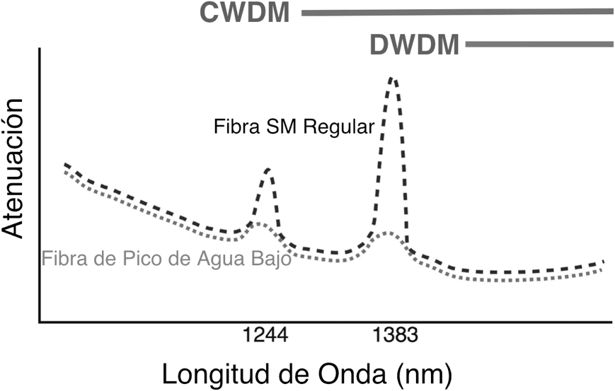
Gama de longitudes de onda en DWDM
| Nombre de la Banda | Rangos de Largos de Onda | Descripción |
|---|---|---|
| Banda-O | 1260 – 1360 nm | Banda original, PON ascendente |
| Banda-E | 1360 – 1460 nm | Pico de agua en la banda |
| Banda-S | 1460 – 1530 nm | PON descendente |
| Banda-C | 1530 – 1565 nm | Atenuación más baja, banda original de DWDM, compatible con amplificadores de fibra, CATV |
| Banda-L | 1565 – 1625 nm | Baja atenuación, banda expandida de DWDM |
| Banda-U | 1625 – 1675 nm | Reservado para uso futuro |
Rendimiento de Enlaces de Datos y Presupuesto de Potencia
Medición de La Calidad de La Transmisión de Datos
Al igual que con la transmisión por cable de cobre o radio, el rendimiento del enlace de datos por fibra óptica puede determinarse por lo bien que transmite los datos; y por lo bien que la señal eléctrica reconvertida que sale del receptor coincide con la entrada al transmisor.
La capacidad de cualquier sistema de fibra óptica para transmitir datos depende, en última instancia, de la potencia óptica en el receptor, como se muestra arriba, donde aparece la tasa de errores de bits del enlace de datos en función de la potencia óptica en el receptor. (La BER es la inversa de la relación señal/ruido, es decir, una BER alta significa una mala relación señal/ruido).
Una potencia demasiado baja o demasiado alta provocará tasas de error de bits elevadas. Demasiada potencia y el amplificador del receptor se satura, demasiado poca y el ruido se convierte en un problema, ya que interfiere con la señal. Esta potencia del receptor depende de dos factores básicos: cuánta potencia lanza a la fibra el transmisor y cuánta se pierde por atenuación en la planta del cable de fibra óptica que conecta el transmisor y el receptor.
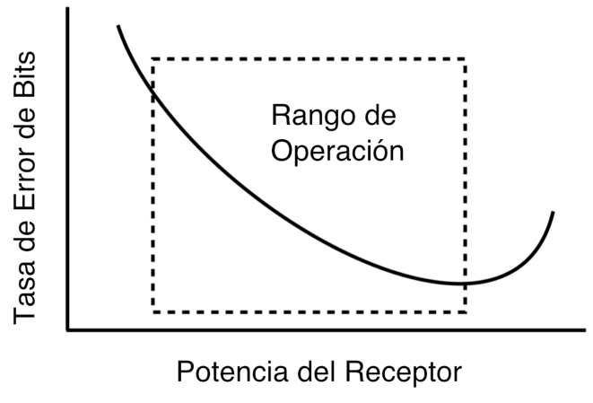
Presupuesto de Potencia de Enlace
El presupuesto de potencia óptica del enlace viene determinado por dos factores: la sensibilidad del receptor, que se determina en la curva de tasa de error de bits anterior, y la potencia de salida del transmisor en la fibra. El nivel de potencia mínimo que produce una tasa de error de bits aceptable determina la sensibilidad del receptor. La potencia del transmisor acoplada a la fibra óptica determina la potencia transmitida. La diferencia entre estos dos niveles de potencia determina el margen de pérdida (presupuesto de potencia) del enlace.
Los enlaces de alta velocidad como las LAN Ethernet gigabit o 10 gigabit en fibra multimodo tienen factores de reducción del ancho de banda de la fibra causados por la dispersión que afecta los pulsos de datos digitales. La antigua fibra 62.5/125 OM1 suele funcionar sólo en enlaces cortos, mientras que los enlaces en fibra 50/125 OM3 optimizada para láser recorrerán la mayor distancia. Incluso los enlaces de fibra monomodo de larga distancia pueden tener limitaciones causadas por la dispersión cromática o del modo de polarización.
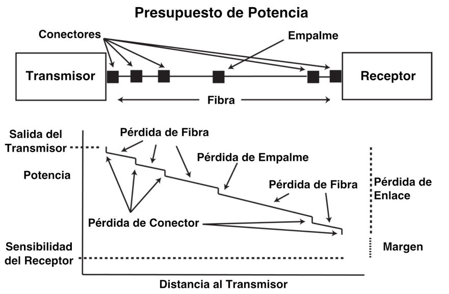
Si el enlace está diseñado para funcionar a distintas velocidades binarias, es necesario generar la curva de rendimiento para cada velocidad. Dado que la potencia total de la señal es función de la anchura del pulso y que ésta varía con la velocidad binaria (a mayor velocidad binaria, pulsos más cortos), la sensibilidad del receptor se degradará a mayor velocidad binaria.
Cada fabricante de componentes y sistemas de enlace de datos especifica su enlace para la sensibilidad del receptor (quizás una potencia mínima requerida) y la potencia mínima acoplada en la fibra desde la fuente. Los valores típicos de estos parámetros se muestran en la tabla siguiente. Para que un fabricante o diseñador de sistemas pueda probarlos correctamente, es necesario conocer las condiciones de prueba. Para los componentes de enlace de datos, eso incluye la frecuencia o velocidad de bits de los datos de entrada y el ciclo de trabajo, los voltajes de alimentación y el tipo de fibra acoplada a la fuente. Para los sistemas, será el software de diagnóstico que necesita el sistema.
Parámetros Típicos de Rendimiento del Enlace/Sistema de Fibra Óptica
| Tipo de Enlace | Fibra | Fuente/ Tipo de Fibra | Largo de onda (nm) | Poder de Transmisión (dBm) | Sensitividad del Receptor (dBm) | Margen del Enlace (dB) |
|---|---|---|---|---|---|---|
| Telecom | SM | Laser | 1310/1550 | +3 to -6 | -30 to -45 | 30 to 40 |
| SM | DWDM | 1550 | +20 to 0 | -30 to -45 | 40 to 50 | |
| Datacom | MM | LED/VCSEL | 850 | -3 to -15 | -15 to -30 | 3 to 25 |
| MM or SM | Laser | 1310 | -0 to -20 | -15 to -30 | 10 to 25 | |
| CATV(AM) | SM | Laser | 1310/1550 | +10 to 0 | 0 to -10 | 10 to 20 |
De todos los enlaces y redes de comunicaciones de datos, hay muchos sistemas de fibra óptica específicos de un proveedor, pero también hay una serie de redes estándar del sector, como Ethernet, que tienen versiones específicas para fibra. Estas redes han acordado especificaciones comunes a los productos de todos los fabricantes para garantizar la interoperabilidad.
Preguntas de Repaso
Verdadero/Falso
Indique si la afirmación es verdadera o falsa.
______ 1. Los enlaces de fibra óptica suelen utilizar dos fibras para enlaces full dúplex (bidireccionales).
______ 2. Los LED tienen una potencia de salida y un ancho de banda mayores que los láseres.
Elección múltiple
Identifique la opción que mejor complete el enunciado o responda a la pregunta.
______ 3. Los sistemas de fibra multimodo que funcionan a velocidades de 1 Gb/s o más utilizan fuentes ___________.
- LED
- VCSEL
- Láser F-P
- Láser DFB
______ 4. La/el ___________ de un láser hace que el ancho de banda efectivo de la fibra multimodo sea mayor que con LED.
- Lanzamiento modal restringido
- Mayor potencia
- Menor potencia
- Ancho de banda
______ 5. Los enlaces de longitud de onda corta de 850 nm pueden utilizar detectores de _____________ en el receptor.
- Silicio
- Germanio
- InGaAs
______ 6. Los enlaces monomodo de longitud de onda larga en el rango de enlaces de 1300-1650 nm deben utilizar detectores de ________ en el receptor para obtener el mejor rendimiento de sensibilidad.
- Silicio
- Germanio
- InGaAs
______ 7. Los amplificadores de fibra y DWDM funcionan entre las longitudes de onda _______________.
- 650-850
- 850-1300
- 1300-1550
- 1480-1650
Respuesta Múltiple
Identifique una o varias opciones que completen mejor el enunciado o respondan mejor a la pregunta.
______ 8. Los transceptores monomodo utilizan fuentes __________ por su mayor potencia acoplada y ancho de banda.
- LED
- VCSEL
- Láseres F-P
- Láseres DFB
______ 9. Los transceptores multimodo utilizan fuentes __________ en función de sus requisitos de potencia acoplada y ancho de banda.
- LED
- VCSEL
- Láseres F-P
- Láseres DFB
Estudios y Proyectos Adicionales
Consulta las páginas web de los fabricantes de fuentes, detectores y transceptores de fibra óptica para ver las especificaciones de rendimiento y las aplicaciones compatibles.
En clase o en el laboratorio, configura un enlace de fibra óptica y comprueba cómo funciona. El enlace puede construirse a partir de componentes o de convertidores de medios disponibles en el mercado.